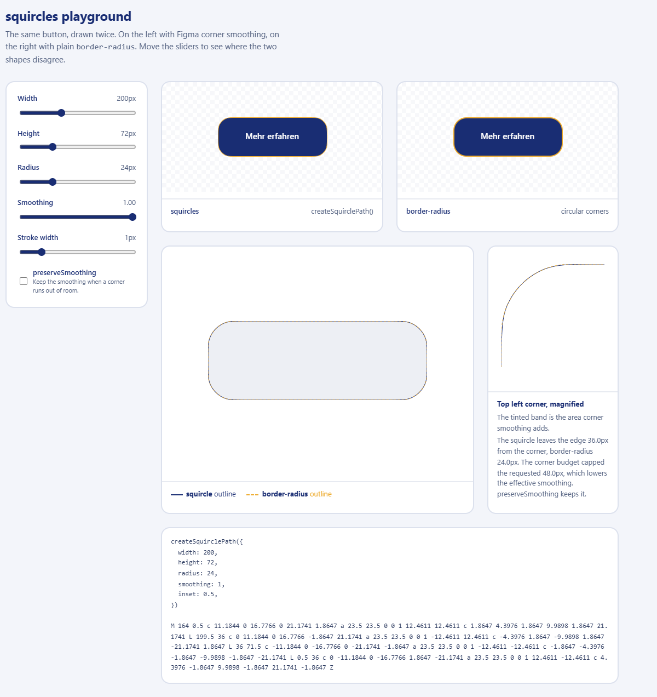

squircles createSquirclePath()
squircles playground
The same button, drawn twice. On the left with Figma corner smoothing,
on the right with plain border-radius. Move the sliders to
see where the two shapes disagree.
border-radius circular corners
squircle outline border-radius outline
Top left corner, magnified The tinted band is the area corner smoothing adds.

Card mit Schatten
Hintergrund, Rand und Schatten kommen aus CSS.
Card applySquircle()
Badge
Input und Badge beliebige Elemente